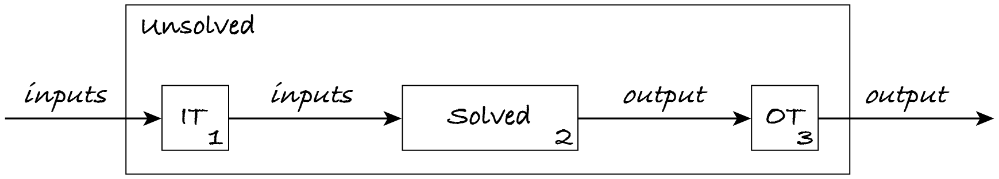
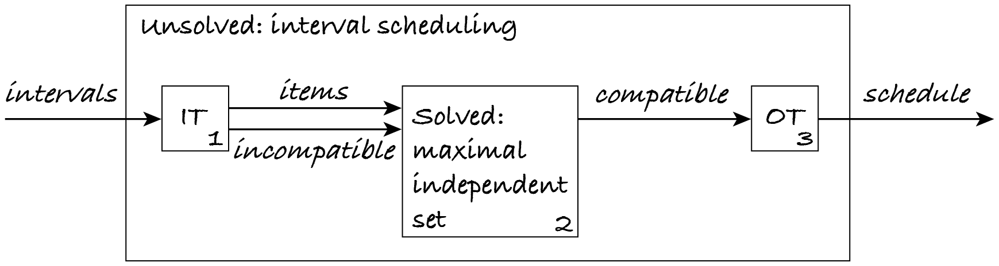

26.3. Reductions
This section introduces problem reduction as an algorithmic technique. (The next section will show how to use problem reduction to classify problems.)
Imagine I’m asked to write an algorithm for problem Unsolved. It just happens that I know of a similar problem Solved for which there is an algorithm. I can then write the following algorithm to handle Unsolved:
Transform the inputs of Unsolved into the inputs of Solved.
Apply the known algorithm to obtain the output of Solved.
Transform the output of Solved into the output of Unsolved.
This algorithm is called a reduction of problem Unsolved to problem Solved.
Info: There are several kinds of reductions. This one is called a mapping reduction because it maps the inputs and output of one problem to those of another problem.
The next figure shows the reduction schematically. Each box is an algorithm, where IT and OT stand for input and output transformation. The numbers in the boxes are the corresponding steps above.
The complexity of the algorithm for Unsolved is the sum of the complexities of the two transformations and of the algorithm for Solved. If transforming the inputs and output takes longer than the algorithm for Solved, then reducing Unsolved to Solved is not very helpful. However, if we find a problem Solved that makes the transformations easy and efficient, then reduction might be a good approach to quickly write an initial algorithm for Unsolved.
Note: Normally we’re only interested in reducing problem Unsolved to problem Solved if the complexity of the transformations is lower than the complexity of Solved.
Let’s look at some examples.
26.3.1. Median
Let’s assume that Unsolved is the problem of finding the median of a sequence of numbers. Since the median is the middle number (or the mean of two middle numbers) if they’re sorted, we can reduce the median problem to the sorting problem.
The following code implements the reduction algorithm. I use generic variable names and some unnecessary assignments just to make the various steps of the reduction clearer.
def median(numbers: list) -> float:
"""Return the median of the numbers.
Preconditions: numbers isn't empty
"""
# finding the median is the unsolved problem
unsolved_input = numbers
# transform input of solved problem into input of unsolved problem
solved_input = unsolved_input
# obtain output of solved problem by applying a known algorithm
solved_output = sorted(solved_input)
# transform output of solved problem into output of unsolved problem
length = len(solved_output)
middle = length // 2
# if the length is odd, the median is the middle number
if length % 2 == 1:
unsolved_output = solved_output[middle]
# otherwise it's the mean of the two middle numbers
else:
left = solved_output[middle]
right = solved_output[middle + 1]
unsolved_output = (left + right) / 2
return unsolved_output
The input transformation just passes the list of numbers to the sorting algorithm, in constant time. The output transformation is not as simple, as it has to distinguish odd- and even-length sequences, but it also takes constant time. Since both transformations take constant time, the complexity of this algorithm is the complexity of sorting: the median problem can be solved in log-linear time by reducing it to the sorting problem.
26.3.2. Minimum and maximum
Consider the problem of finding the smallest value of a non-empty sequence of comparable values. It’s similar to (it’s actually a special case of) the selection problem: return the n-th smallest value of a sequence with n or more values. There’s an efficient algorithm for this problem (quickselect), so we can reduce the problem of finding the smallest value to the problem of finding the n-th smallest.
def minimum(items: list) -> object:
"""Return the smallest item in items.
Preconditions:
- all items are pairwise comparable
- len(items) > 0
"""
# transform minimum problem input to selection problem input
solved_items = items
solved_n = 1
# solve the selection problem
solved_output = quick_select(solved_items, solved_n)
# transform selection problem output to minimum problem output
unsolved_output = solved_output
return unsolved_output
The input transformation adds the second parameter that the selection problem requires: finding the minimum is finding the first smallest value, so n = 1. The output transformation just passes on the output of the selection problem.
The transformations take constant time and quickselect takes linear time, so the minimum can be found in linear time. Even though the reduction has the same complexity as a linear search for the minimum, the latter is a simpler and faster algorithm than quickselect.
Note: A reduction is often not the simplest algorithm for a problem.
Exercise 26.3.1
Reduce the problem of finding the maximum value in a non-empty sequence of comparable values to the selection problem. You only need to indicate how you would change the code above.
26.3.3. Interval scheduling
To show that one problem reduces to another, we can write code as above, or just outline the input and output transformation algorithms. Here’s an example, using the interval scheduling and maximal independent set problems.
Previously, we reduced the specific problem of finding the minimum (or maximum) to the general problem of finding the n-th smallest value. The general problem had one extra input, n.
Similarly, the interval scheduling problem is a specific version of the independent set problem: we want a largest subset of intervals that aren’t incompatible (overlapping). The incompatibility relation is implicitly given by the start and end times of the intervals, whereas the generic problem has an extra input indicating which elements are incompatible.
If there’s an algorithm for a general problem we can usually reuse it to solve more specific problems.
Note: We can usually reduce a specific problem to a more general one.
Reduction
The next figure shows the reduction of the interval scheduling problem (Unsolved) to the maximal independent set problem (Solved), with their inputs and outputs.
The input transformation algorithm constructs the inputs of the Solved problem (items and incompatible) from the inputs of the Unsolved problem (intervals) as follows:
let items be intervals
let incompatible be the empty set
for every interval 1 in intervals:
for every interval 2 in intervals:
if interval 1 ≠ interval 2 and not compatible(interval 1, interval 2):
add (interval 1, interval 2) to incompatible
The auxiliary function ‘compatible’ checks that one interval ends before the other one starts.
Now the output transformation algorithm: it constructs the output of Unsolved (schedule) from the output of Solved (compatible).
let schedule be compatible
The input transformation constructs the set of overlapping pairs of intervals. The output transformation simply passes on the result: any algorithm that computes a maximal independent set also solves the interval scheduling problem, i.e. computes a largest subset of non-overlapping intervals, because the input items are the intervals and the incompatible pairs are the overlapping intervals.
Complexity
To determine the complexity of a reduction, we must add the complexities of the transformations and of the most efficient algorithm for problem Solved.
What are the complexities of the input transformation and of the output transformation for the above reduction?
The output transformation takes constant time. The input transformation generates all pairs of intervals in quadratic time and checks each one in constant time by just comparing the integer start and end times. So the input transformation has quadratic complexity in the number of intervals.
The most efficient algorithm we know for the maximal independent set is brute-force search: go through the 2ⁿ subsets of the n items, from largest to smallest subset, and stop when a compatible subset is found.
This means that problem reduction leads to an interval scheduling algorithm with exponential worst-case complexity. This is much worse than the log-linear greedy algorithm for interval scheduling.
Note: Reduction may be a way of quickly obtaining an initial algorithm for a problem, but it may be a very inefficient algorithm.
26.3.4. Reduction template
If you are asked in a TMA to reduce a given Unsolved problem to a Solved problem of your choice, you have to indicate the name of your chosen problem, its inputs and output, and the input and output transformations. You can present the transformations as step-by-step algorithms or just outline them. We suggest you present a reduction as follows.
Unsolved |
Solved |
|
|---|---|---|
Problem: |
interval scheduling |
maximal independent set |
Input: |
intervals, a set of integer pairs |
items, a set of objects; incompatible, a set of pairs of objects |
Output: |
schedule, a set of integer pairs |
compatible, a set of objects |
Input transformation (Unsolved to Solved): Let items be intervals. Let incompatible be the empty set. For each pair of intervals, if one starts before the other one ends, then add the pair to incompatible.
Output transformation (Solved to Unsolved): Let schedule be compatible.
Exercise 26.3.2
Complete the template below to show how the problem of finding the maximum can be reduced to the sorting problem.
Problem: |
maximum |
sorting |
Input: |
items, a sequence of objects |
|
Output: |
largest, an object |
Input transformation (Unsolved to Solved):
Output transformation (Solved to Unsolved):
What is the complexity of your reduction?
Exercise 26.3.3 (optional)
Describe the reductions of Sections 26.3.1 and 26.3.2 using the template.